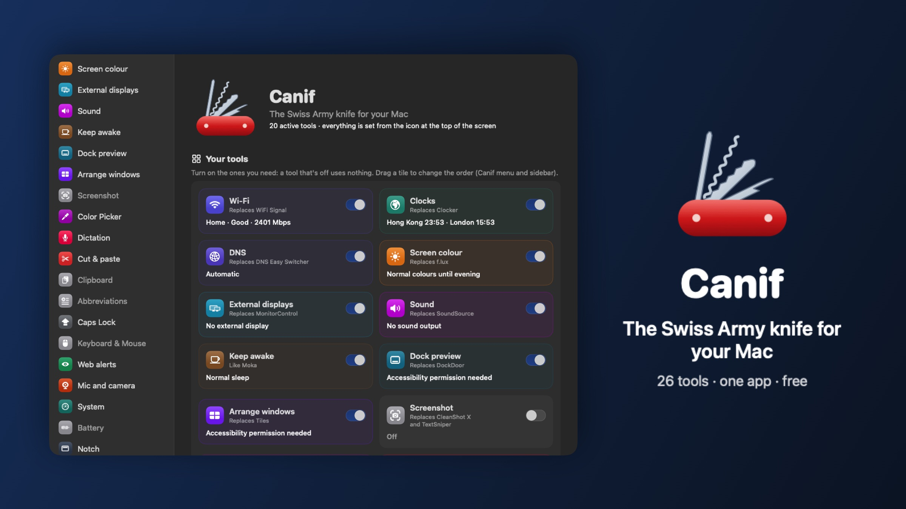
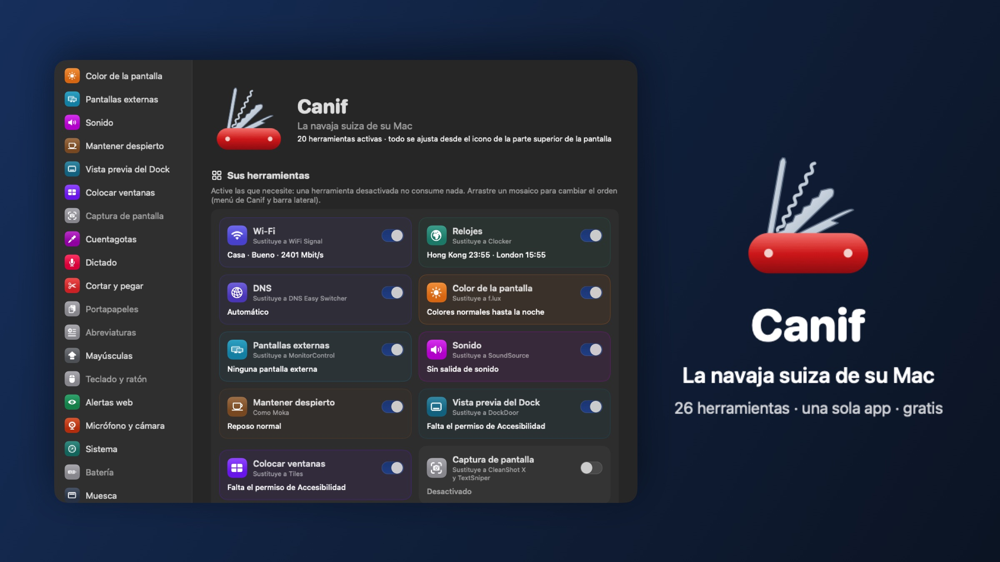
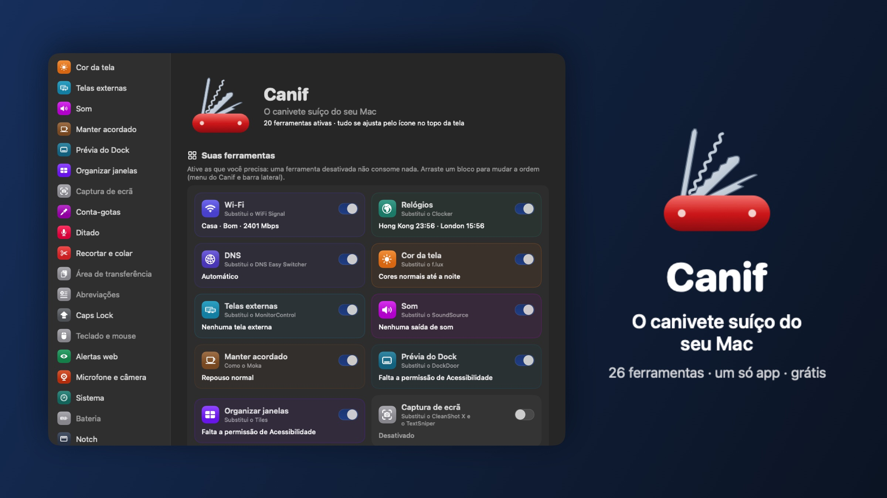
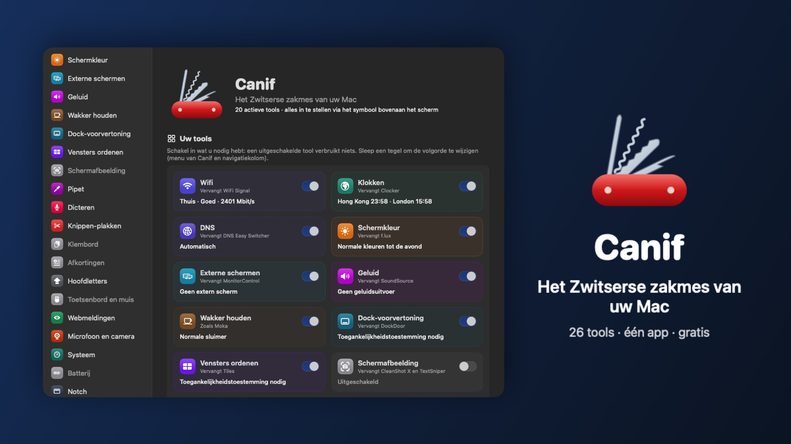
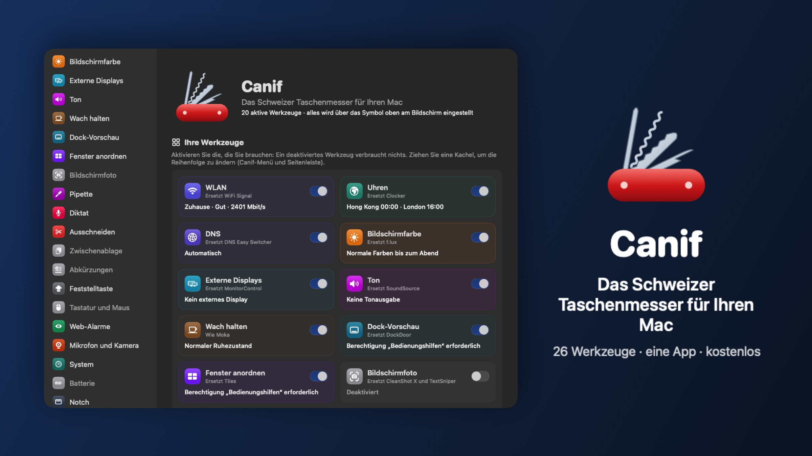
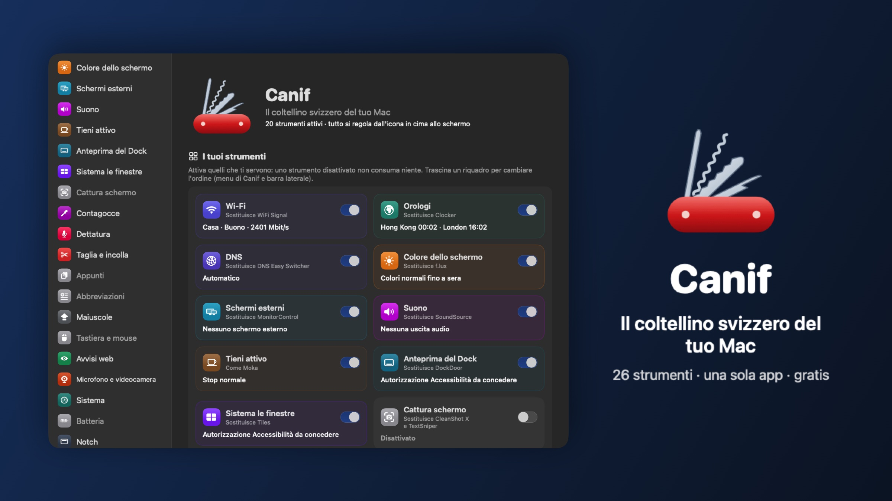

Canif
Le couteau suisse de votre Mac : 26 outils dans une seule app, en 7 langues.
Your Mac's Swiss army knife: 26 tools in one app, in 7 languages.
La navaja suiza de su Mac: 26 herramientas en una sola app, en 7 idiomas.
O canivete suíço do seu Mac: 26 ferramentas em um só app, em 7 idiomas.
Het Zwitserse zakmes van uw Mac: 26 tools in één app, in 7 talen.
Das Schweizer Taschenmesser für Ihren Mac: 26 Werkzeuge in einer App, in 7 Sprachen.
Il coltellino svizzero del tuo Mac: 26 strumenti in un'unica app, in 7 lingue.
Gratuit. macOS 14 Sonoma ou plus récent, Mac Apple Silicon (M1 ou plus récent).
Free. macOS 14 Sonoma or later, Apple Silicon Mac (M1 or later).
Gratis. macOS 14 Sonoma o posterior, Mac con Apple Silicon (M1 o posterior).
Grátis. macOS 14 Sonoma ou posterior, Mac com Apple Silicon (M1 ou posterior).
Gratis. macOS 14 Sonoma of nieuwer, Mac met Apple Silicon (M1 of nieuwer).
Kostenlos. macOS 14 Sonoma oder neuer, Mac mit Apple Silicon (M1 oder neuer).
Gratis. macOS 14 Sonoma o versioni successive, Mac con Apple Silicon (M1 o successivo).







Une app au lieu de vingt-six
One app instead of twenty-six
Una app en lugar de veintiséis
Um app em vez de vinte e seis
Eén app in plaats van zesentwintig
Eine App statt sechsundzwanzig
Un'app invece di ventisei
Chaque outil s'active ou se coupe d'un clic. Mode standard pour aller à l'essentiel, mode expert pour tout régler. Tout se commande depuis l'icône en haut de l'écran, et les icônes des outils se placent juste à côté de celle de Canif.
Each tool turns on or off with one click. Standard mode for the essentials, expert mode to fine-tune everything. Everything is reachable from the icon at the top of the screen, and the tools' icons sit right next to Canif's.
Cada herramienta se activa o desactiva con un clic. Modo estándar para lo esencial, modo experto para ajustarlo todo. Todo se controla desde el icono en la parte superior de la pantalla, y los iconos de las herramientas se colocan justo al lado del de Canif.
Cada ferramenta liga ou desliga com um clique. Modo padrão para o essencial, modo avançado para ajustar tudo. Tudo é controlado pelo ícone no alto da tela, e os ícones das ferramentas ficam bem ao lado do ícone do Canif.
Elke tool zet u met één klik aan of uit. Standaardmodus voor de basis, expertmodus om alles in te stellen. Alles bedient u via het symbool bovenaan het scherm, en de symbolen van de tools staan direct naast dat van Canif.
Jedes Werkzeug lässt sich mit einem Klick ein- oder ausschalten. Standardmodus für das Wesentliche, Expertenmodus für alle Einstellungen. Alles steuern Sie über das Symbol oben auf dem Bildschirm, und die Symbole der Werkzeuge sitzen direkt neben dem von Canif.
Ogni strumento si attiva o disattiva con un clic. Modalità standard per l'essenziale, modalità esperto per regolare tutto. Tutto si comanda dall'icona in alto sullo schermo, e le icone degli strumenti si mettono proprio accanto a quella di Canif.
WiFi
WiFi
Wi‑Fi
Wi‑Fi
wifi
WLAN
Wi‑Fi
La qualité de votre WiFi en un coup d'œil, avec le signal en direct.
Your WiFi quality at a glance, with the live signal.
La calidad de su Wi‑Fi de un vistazo, con la señal en directo.
A qualidade do seu Wi‑Fi num relance, com o sinal ao vivo.
De kwaliteit van uw wifi in één oogopslag, met het signaal live.
Die Qualität Ihres WLANs auf einen Blick, mit dem Signal live.
La qualità del tuo Wi‑Fi a colpo d'occhio, con il segnale in tempo reale.
Horloges
Clocks
Relojes
Relógios
Klokken
Uhren
Orologi
L'heure de vos villes préférées dans la barre des menus.
The time in your favourite cities, in the menu bar.
La hora de sus ciudades favoritas en la barra de menús.
A hora das suas cidades favoritas na barra de menus.
De tijd in uw favoriete steden in de menubalk.
Die Uhrzeit Ihrer Lieblingsstädte in der Menüleiste.
L'ora delle tue città preferite nella barra dei menu.
DNS
DNS
DNS
DNS
DNS
DNS
DNS
Changez de DNS en un clic : plus rapide, plus sûr, sans pub.
Switch DNS in one click: faster, safer, ad-free.
Cambie de DNS con un clic: más rápido, más seguro, sin anuncios.
Troque de DNS com um clique: mais rápido, mais seguro, sem anúncios.
Wissel met één klik van DNS: sneller, veiliger, zonder reclame.
DNS mit einem Klick wechseln: schneller, sicherer, ohne Werbung.
Cambia DNS con un clic: più veloce, più sicuro, senza pubblicità.
Couleur de l'écran
Screen colour
Color de la pantalla
Cor da tela
Schermkleur
Bildschirmfarbe
Colore dello schermo
Moins de lumière bleue le soir, avec horaires et transition douce.
Less blue light in the evening, with schedules and a smooth transition.
Menos luz azul por la noche, con horarios y una transición suave.
Menos luz azul à noite, com horários e transição suave.
Minder blauw licht in de avond, met tijdschema's en een zachte overgang.
Weniger blaues Licht am Abend, mit Zeitplänen und sanftem Übergang.
Meno luce blu la sera, con orari e una transizione morbida.
Garder éveillé
Keep awake
Mantener despierto
Manter acordado
Wakker houden
Wach halten
Tieni sveglio
Empêchez le Mac de s'endormir, le temps qu'il faut.
Keep your Mac from going to sleep, for as long as you need.
Evite que el Mac entre en reposo, el tiempo que necesite.
Impeça o Mac de entrar em repouso pelo tempo que precisar.
Voorkom dat uw Mac in slaap valt, zo lang als nodig.
Verhindern Sie, dass Ihr Mac in den Ruhezustand geht – so lange Sie wollen.
Impedisci al Mac di andare in stop, per tutto il tempo che serve.
Aperçu du Dock
Dock preview
Vista previa del Dock
Pré-visualização do Dock
Dock-voorvertoning
Dock-Vorschau
Anteprima del Dock
Survolez une icône du Dock pour voir ses fenêtres, la musique en cours ou un dossier. Aussi avec ⌘⇥ et des gestes.
Hover over a Dock icon to see its windows, the music playing or a folder. Also with ⌘⇥ and gestures.
Pase el puntero sobre un icono del Dock para ver sus ventanas, la música que suena o una carpeta. También con ⌘⇥ y gestos.
Passe o cursor sobre um ícone do Dock para ver suas janelas, a música tocando ou uma pasta. Também com ⌘⇥ e gestos.
Beweeg de aanwijzer over een Dock-symbool om de vensters, de muziek die speelt of een map te zien. Ook met ⌘⇥ en gebaren.
Fahren Sie über ein Dock-Symbol, um seine Fenster, die laufende Musik oder einen Ordner zu sehen. Auch mit ⌘⇥ und Gesten.
Passa il puntatore su un'icona del Dock per vedere le sue finestre, la musica in riproduzione o una cartella. Anche con ⌘⇥ e gesti.
Ranger les fenêtres
Window snapping
Organizar ventanas
Organizar janelas
Vensters ordenen
Fenster anordnen
Disporre le finestre
Glissez une fenêtre contre un bord, ou ⌃⌥ + flèche.
Drag a window to an edge of the screen, or press ⌃⌥ + arrow.
Arrastre una ventana contra un borde, o pulse ⌃⌥ + flecha.
Arraste uma janela até uma borda, ou use ⌃⌥ + seta.
Sleep een venster naar een rand, of druk op ⌃⌥ + pijl.
Ziehen Sie ein Fenster an einen Rand oder drücken Sie ⌃⌥ + Pfeiltaste.
Trascina una finestra contro un bordo, oppure premi ⌃⌥ + freccia.
Dictée
Dictation
Dictado
Ditado
Dicteren
Diktat
Dettatura
Maintenez un raccourci et parlez : le texte s'écrit tout seul, sans internet. Modèle au choix (Parakeet, Whisper, Canary…).
Hold down a shortcut and speak: the text types itself, no internet needed. Choose your model (Parakeet, Whisper, Canary…).
Mantenga pulsado un atajo y hable: el texto se escribe solo, sin internet.
Mantenha um atalho pressionado e fale: o texto se escreve sozinho, sem internet.
Houd een toetscombinatie ingedrukt en praat: de tekst verschijnt vanzelf, zonder internet.
Halten Sie ein Tastenkürzel gedrückt und sprechen Sie: Der Text schreibt sich von selbst, ohne Internet.
Tieni premuta un'abbreviazione e parla: il testo si scrive da solo, senza internet.
Couper-coller
Cut and paste
Cortar y pegar
Recortar e colar
Knippen en plakken
Ausschneiden und einsetzen
Taglia e incolla
⌘X puis ⌘V pour déplacer des fichiers dans le Finder.
⌘X then ⌘V to move files in the Finder.
⌘X y luego ⌘V para mover archivos en el Finder.
⌘X e depois ⌘V para mover arquivos no Finder.
⌘X en dan ⌘V om bestanden te verplaatsen in de Finder.
⌘X und dann ⌘V, um Dateien im Finder zu bewegen.
⌘X e poi ⌘V per spostare i file nel Finder.
Majuscules
Caps Lock
Bloq Mayús
Caps Lock
Caps Lock
Feststelltaste
Bloc Maiusc
Voyez tout de suite quand le verrouillage des majuscules est activé.
See right away when Caps Lock is on.
Vea al instante cuando el bloqueo de mayúsculas está activado.
Veja na hora quando o Caps Lock está ativado.
Zie meteen wanneer Caps Lock aan staat.
Sehen Sie sofort, wann die Feststelltaste aktiv ist.
Vedi subito quando il blocco maiuscole è attivo.
Alertes web
Web alerts
Alertas web
Alertas da web
Webmeldingen
Web-Hinweise
Avvisi web
Soyez prévenu quand une partie d'une page web change.
Get notified when part of a web page changes.
Reciba un aviso cuando cambia una parte de una página web.
Seja avisado quando uma parte de uma página da web mudar.
Krijg een melding als een deel van een webpagina verandert.
Lassen Sie sich benachrichtigen, wenn sich ein Teil einer Webseite ändert.
Ricevi un avviso quando cambia una parte di una pagina web.
Micro et caméra
Microphone and camera
Micrófono y cámara
Microfone e câmera
Microfoon en camera
Mikrofon und Kamera
Microfono e fotocamera
Un badge s'affiche dès qu'une app allume votre micro ou votre caméra.
A badge appears as soon as an app turns on your microphone or camera.
Aparece una señal en cuanto una app enciende su micrófono o su cámara.
Um selo aparece assim que um app liga seu microfone ou sua câmera.
Er verschijnt een badge zodra een app uw microfoon of camera aanzet.
Ein Hinweis erscheint, sobald eine App Ihr Mikrofon oder Ihre Kamera einschaltet.
Compare un badge appena un'app accende il microfono o la fotocamera.
Système
System
Sistema
Sistema
Systeem
System
Sistema
Processeur, carte graphique, mémoire, disques, réseau, températures et batterie, avec la carte de ce qui remplit votre disque.
CPU, GPU, memory, disks, network, temperatures and battery, with a map of what fills your disk.
Procesador, gráfica, memoria, discos, red, temperaturas y batería, con un mapa de lo que llena su disco.
Processador, GPU, memória, discos, rede, temperaturas e bateria, com um mapa do que enche seu disco.
Processor, GPU, geheugen, schijven, netwerk, temperaturen en batterij, met een kaart van wat uw schijf vult.
Prozessor, Grafik, Speicher, Festplatten, Netzwerk, Temperaturen und Batterie, mit einer Karte dessen, was Ihre Festplatte füllt.
Processore, grafica, memoria, dischi, rete, temperature e batteria, con una mappa di ciò che riempie il disco.
Encoche
Notch
Muesca
Notch
Notch
Notch
Notch
Une île dynamique sous l'encoche : la musique de n'importe quelle app, volume et luminosité, agenda avec alerte avant les réunions, Raccourcis, appareils Bluetooth, miroir, note et plateau de fichiers. Avec des gestes.
A dynamic island under the notch: music from any app, volume and brightness, calendar with meeting alerts, Shortcuts, Bluetooth devices, mirror, notes and a file tray. With gestures.
Una isla dinámica bajo la muesca: música de cualquier app, volumen y brillo, agenda con aviso de reuniones, Atajos, dispositivos Bluetooth, espejo, notas y una bandeja de archivos. Con gestos.
Uma ilha dinâmica sob o notch: música de qualquer app, volume e brilho, agenda com alerta de reuniões, Atalhos, dispositivos Bluetooth, espelho, notas e uma bandeja de arquivos. Com gestos.
Een dynamisch eiland onder de notch: muziek uit elke app, volume en helderheid, agenda met vergadermelding, Opdrachten, Bluetooth-apparaten, spiegel, notities en een bestandsbak. Met gebaren.
Eine dynamische Insel unter der Notch: Musik aus jeder App, Lautstärke und Helligkeit, Kalender mit Meeting-Hinweis, Kurzbefehle, Bluetooth-Geräte, Spiegel, Notizen und eine Dateiablage. Mit Gesten.
Un'isola dinamica sotto il notch: musica da qualsiasi app, volume e luminosità, agenda con avviso delle riunioni, Comandi rapidi, dispositivi Bluetooth, specchio, note e un vassoio per i file. Con i gesti.
Apps web
Web apps
Apps web
Apps web
Webapps
Web-Apps
App web
Transformez un site en vraie app pour le Mac, avec sa propre session, ses notifications et son icône.
Turn a website into a real Mac app, with its own session, notifications and icon.
Convierta un sitio en una app de verdad para el Mac, con su propia sesión, notificaciones e icono.
Transforme um site em um app de verdade para o Mac, com sessão, notificações e ícone próprios.
Maak van een website een echte Mac-app, met een eigen sessie, meldingen en symbool.
Machen Sie aus einer Website eine echte Mac-App, mit eigener Sitzung, Mitteilungen und eigenem Symbol.
Trasforma un sito in una vera app per Mac, con sessione, notifiche e icona proprie.
Presse-papiers
Clipboard
Portapapeles
Área de transferência
Klembord
Zwischenablage
Appunti
Retrouvez tout ce que vous avez copié, et collez-le d'un raccourci (⇧⌘V). Avec recherche et épingles ; ce qui vient d'un gestionnaire de mots de passe n'est pas gardé.
Find everything you copied and paste it with a shortcut (⇧⌘V). With search and pins; anything from a password manager is never kept.
Recupere todo lo que ha copiado y péguelo con un atajo (⇧⌘V). Con búsqueda y elementos fijados; lo que viene de un gestor de contraseñas no se guarda.
Encontre tudo o que você copiou e cole com um atalho (⇧⌘V). Com busca e itens fixados; o que vem de um gerenciador de senhas não é guardado.
Vind alles terug wat u hebt gekopieerd en plak het met een sneltoets (⇧⌘V). Met zoeken en vastzetten; wat uit een wachtwoordbeheerder komt, wordt niet bewaard.
Finden Sie alles wieder, was Sie kopiert haben, und fügen Sie es per Kurzbefehl ein (⇧⌘V). Mit Suche und Anheften; was aus einem Passwort-Manager kommt, wird nicht gespeichert.
Ritrova tutto ciò che hai copiato e incollalo con una scorciatoia (⇧⌘V). Con ricerca ed elementi fissati; ciò che arriva da un gestore di password non viene conservato.
Abréviations
Abbreviations
Abreviaturas
Abreviações
Afkortingen
Abkürzungen
Abbreviazioni
Tapez quelques lettres, Canif écrit le reste. Avec la date, l'heure, le presse-papiers et la place du curseur.
Type a few letters, Canif writes the rest. With the date, the time, the clipboard and where the cursor goes.
Escriba unas letras y Canif escribe el resto. Con la fecha, la hora, el portapapeles y la posición del cursor.
Digite algumas letras e o Canif escreve o resto. Com a data, a hora, a área de transferência e a posição do cursor.
Typ een paar letters, Canif schrijft de rest. Met de datum, de tijd, het klembord en de plek van de cursor.
Tippen Sie ein paar Buchstaben, Canif schreibt den Rest. Mit Datum, Uhrzeit, Zwischenablage und Cursorposition.
Scrivi poche lettere, Canif scrive il resto. Con la data, l'ora, gli appunti e la posizione del cursore.
Barre des menus
Menu bar
Barra de menús
Barra de menus
Menubalk
Menüleiste
Barra dei menu
Rangez les icônes de la barre des menus derrière un chevron.
Tuck menu bar icons away behind a chevron.
Guarde los iconos de la barra de menús detrás de una flecha.
Guarde os ícones da barra de menus atrás de uma seta.
Berg de symbolen in de menubalk op achter een pijltje.
Verstauen Sie die Symbole der Menüleiste hinter einem Pfeil.
Riponi le icone della barra dei menu dietro una freccia.
Capture d'écran
Screenshot
Captura de pantalla
Captura de tela
Schermafbeelding
Bildschirmfoto
Cattura schermo
Zone, fenêtre, page entière, texte : capturez, annotez, partagez. Reconnaît le texte et les QR codes, et épingle une capture au-dessus des fenêtres.
Area, window, full page, text: capture, annotate, share. Reads text and QR codes, and pins a capture above your windows.
Zona, ventana, página entera, texto: capture, anote y comparta. Reconoce texto y códigos QR, y fija una captura encima de las ventanas.
Área, janela, página inteira, texto: capture, anote, compartilhe. Reconhece texto e códigos QR, e fixa uma captura acima das janelas.
Gebied, venster, hele pagina, tekst: vastleggen, annoteren, delen. Herkent tekst en QR-codes, en zet een schermafbeelding vast boven de vensters.
Bereich, Fenster, ganze Seite, Text: aufnehmen, beschriften, teilen. Erkennt Text und QR-Codes und heftet eine Aufnahme über die Fenster.
Area, finestra, pagina intera, testo: cattura, annota, condividi. Riconosce testo e codici QR, e fissa una cattura sopra le finestre.
Pipette
Colour picker
Cuentagotas
Conta-gotas
Pipet
Pipette
Contagocce
Prenez la couleur de n'importe quel pixel, dans le format voulu : HEX, RGB, HSL, SwiftUI… avec le contraste WCAG.
Grab the colour of any pixel, in the format you need: HEX, RGB, HSL, SwiftUI… with the WCAG contrast.
Tome el color de cualquier píxel, en el formato que desee: HEX, RGB, HSL, SwiftUI… con el contraste WCAG.
Pegue a cor de qualquer pixel, no formato que quiser: HEX, RGB, HSL, SwiftUI… com o contraste WCAG.
Neem de kleur van elke pixel over, in het gewenste formaat: HEX, RGB, HSL, SwiftUI… met het WCAG-contrast.
Übernehmen Sie die Farbe eines beliebigen Pixels im gewünschten Format: HEX, RGB, HSL, SwiftUI… mit WCAG-Kontrast.
Prendi il colore di qualsiasi pixel, nel formato che vuoi: HEX, RGB, HSL, SwiftUI… con il contrasto WCAG.
Son
Sound
Sonido
Som
Geluid
Ton
Suono
Changez de sortie en un clic et réglez le volume de chaque app (jusqu'à 150 %) ou sa sortie. Égaliseur 10 bandes en bêta.
Switch outputs in one click and set each app's volume (up to 150%) or output. 10-band equaliser in beta.
Cambie de salida con un clic y ajuste el volumen de cada app (hasta el 150 %) o su salida. Ecualizador de 10 bandas en beta.
Troque de saída com um clique e ajuste o volume de cada app (até 150%) ou a saída dele. Equalizador de 10 bandas em beta.
Wissel met één klik van uitvoer en stel per app het volume (tot 150%) of de uitvoer in. Equalizer met 10 banden in bèta.
Wechseln Sie die Ausgabe mit einem Klick und regeln Sie Lautstärke (bis 150 %) oder Ausgabe jeder App. 10-Band-Equalizer in der Beta.
Cambia uscita con un clic e regola il volume (fino al 150%) o l'uscita di ogni app. Equalizzatore a 10 bande in beta.
Écrans externes
External displays
Pantallas externas
Telas externas
Externe schermen
Externe Displays
Schermi esterni
Réglez la luminosité et le volume de vos écrans externes, comme celui du Mac.
Set the brightness and volume of your external displays, just like the Mac's.
Ajuste el brillo y el volumen de sus pantallas externas, como la del Mac.
Ajuste o brilho e o volume das suas telas externas, como a do Mac.
Stel de helderheid en het volume van uw externe schermen in, net als die van de Mac.
Regeln Sie Helligkeit und Lautstärke Ihrer externen Displays wie beim Mac.
Regola luminosità e volume dei tuoi schermi esterni, come quello del Mac.
Batterie
Battery
Batería
Bateria
Batterij
Batterie
Batteria
Limitez la charge de la batterie pour qu'elle dure des années. Un petit assistant s'installe avec le mot de passe administrateur ; sur certains Mac, une méthode de secours prend le relais.
Limit battery charging so it lasts for years. A small helper installs with your administrator password; on some Macs, a fallback method takes over.
Limite la carga de la batería para que dure años. Un pequeño asistente se instala con la contraseña de administrador; en algunos Mac, un método alternativo toma el relevo.
Limite a carga da bateria para que ela dure anos. Um pequeno assistente é instalado com a senha de administrador; em alguns Macs, um método alternativo assume.
Beperk het opladen van de batterij zodat hij jaren meegaat. Een kleine helper wordt geïnstalleerd met het beheerderswachtwoord; op sommige Macs neemt een noodmethode het over.
Begrenzen Sie die Akkuladung, damit er jahrelang hält. Ein kleiner Helfer wird mit dem Administratorpasswort installiert; auf manchen Macs übernimmt eine Ersatzmethode.
Limita la carica della batteria perché duri anni. Un piccolo assistente si installa con la password di amministratore; su alcuni Mac subentra un metodo di riserva.
Désinstaller
Uninstall
Desinstalar
Desinstalar
Verwijderen
Deinstallieren
Disinstalla
Désinstallez une app et tous ses fichiers cachés, en un geste.
Uninstall an app and all its hidden files in one go.
Desinstale una app y todos sus archivos ocultos de una vez.
Desinstale um app e todos os arquivos ocultos dele de uma só vez.
Verwijder een app en al zijn verborgen bestanden in één keer.
Deinstallieren Sie eine App samt allen versteckten Dateien mit einem Handgriff.
Disinstalla un'app e tutti i suoi file nascosti in un solo gesto.
Clavier et souris
Keyboard and mouse
Teclado y ratón
Teclado e mouse
Toetsenbord en muis
Tastatur und Maus
Tastiera e mouse
Molette douce, sens de défilement séparé, ⌘Q protégé et nettoyage du clavier.
Smooth scroll wheel, separate scroll directions, protected ⌘Q and keyboard cleaning.
Rueda suave, sentido de desplazamiento separado, ⌘Q protegido y limpieza del teclado.
Roda suave, sentido de rolagem separado, ⌘Q protegido e limpeza do teclado.
Soepel scrollwiel, aparte scrollrichting, beschermde ⌘Q en het toetsenbord schoonmaken.
Sanftes Mausrad, getrennte Scrollrichtungen, geschütztes ⌘Q und Tastaturreinigung.
Rotella fluida, direzioni di scorrimento separate, ⌘Q protetto e pulizia della tastiera.
Pomodoro
Pomodoro
Pomodoro
Pomodoro
Pomodoro
Pomodoro
Pomodoro
Travaillez par séances de 25 minutes, avec de vraies pauses.
Work in 25-minute sessions, with real breaks.
Trabaje en sesiones de 25 minutos, con pausas de verdad.
Trabalhe em sessões de 25 minutos, com pausas de verdade.
Werk in sessies van 25 minuten, met echte pauzes.
Arbeiten Sie in 25-Minuten-Einheiten, mit echten Pausen.
Lavora in sessioni da 25 minuti, con pause vere.